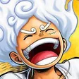
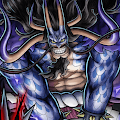
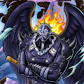
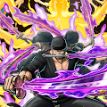
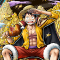
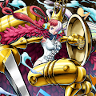

キャラランキング表
| ランキング |
キャラ |
根拠 |
|
1位
|

キッドロー |
・敵を無視して旗を奪取するのが何より理不尽。なおかつ旗奪取中はよろけ、ダウン無効
・防御50%でよろけ無効を保つのが簡単。青キャラの宿敵REDシャンクスからのダメージが入らない。
・通常長押しでキャラチェンジ可能。実質体力が2倍。
|
|
2位
|

ニカルフィ |
・ニカルフィの特徴として、全スタイルにチェンジ可能。スタイルチェンジを使いこなせば、やりたいことが全部
出来る万能なキャラと言える
・全てのスキルが吹っ飛ばし持ちなので最強GTであるキッドローも剥がすことが出来る。
|
|
3位
|

人獣カイドウ |
・作中随一の裏取り能力。
・通常攻撃で相手の回避を奪ってからの無敵スキルが強力
・回復不能を相手のブースト前に付与しておけば有利に立ち回れる。
|
|
4位
|

キング |
・機動力でキングに勝るキャラはいない。
・旗奪取中三回まで攻撃を食らわないのは唯一無二。
・お宝エリア内に味方がいないとき、よろけ無効。
|
|
5位
|

閻魔ゾロ |
・スキル2の相手の得意属性に変化できるので常に有利に立ち回ることが出来る。
・前方遠距離に進む無敵スキルを持っているので、GTに対して距離を詰めることが出来る。
・得意属性に対して常によろけ無効なので、タイマンで押し切ることが出来る。
|
|
6位
|

おリン |
・お宝ゲージを50%超過してためることが出来るかつ、ゲージの回復速度が速い。
・無敵スキルを2つ所持している。
・敵を無視して旗ゲージをためたり旗奪取することが出来る。
・頑張りボーナスが過去に類を見ないぐらい稼ぎやすいので、前環境では140%程のサポートでランカーになれるプレイヤーもいた。
|
|
7位
|
シャンクス |
・瞬間移動できるスキル1がよけにくく、ダメージ減少を無効できるので超高火力。
・覇気状態中はよろけと状態異常無効。
・敵を吹っ飛ばすたびに攻撃力が20%増加（最大100%）していくので終盤まで耐久出来れば超高火力が実現可能。
|
|
8位
|

夢ルフィ |
・スキル2の攻撃力が高い。特にバウンドマン中のスキル2に当たってしまえばどのキャラを使っていてもKOもしくは瀕死に追い込まれる。
・攻撃を当てるだけで攻撃力が3%（最大75%）あがるので簡単に超高火力状態になれる。
|
|
9位
|

光月おでん |
・スキル2の攻撃力が高く、スキルの出が速いので攻撃を当てやすい。
・スキル1は突進型の無敵スキルなので逃げにも攻撃にも守りも使える汎用性の高いスキルとなっている。
・お宝奪取中にお宝エリア内に敵がいれば、攻撃を受け続けてもHP1で耐え続けることが出来る。
|
|
10位
|

ウタ |
・スキル1の出が速いので攻撃を当てやすい。敵を行動不能にするウタウタ状態にすることが出来る。
・通常2止めしておけば、相手がダウンしない永遠コンボが可能。
・通常攻撃による移動でゲッター顔負けの機動力を見せることが出来る。裏取り対処に素早くいける。
|